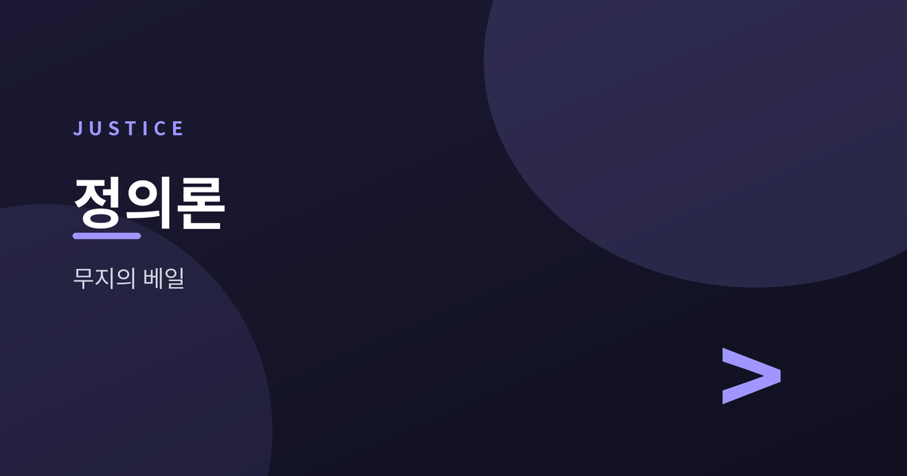
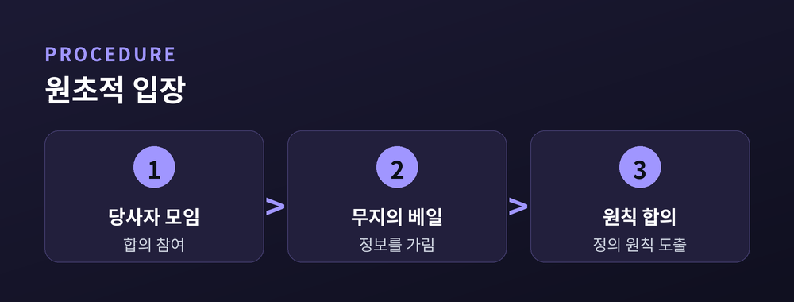
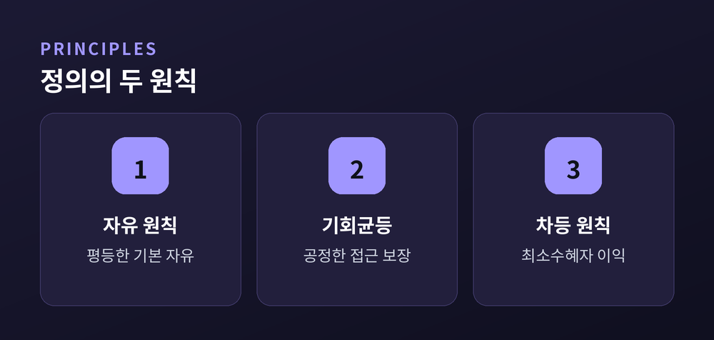
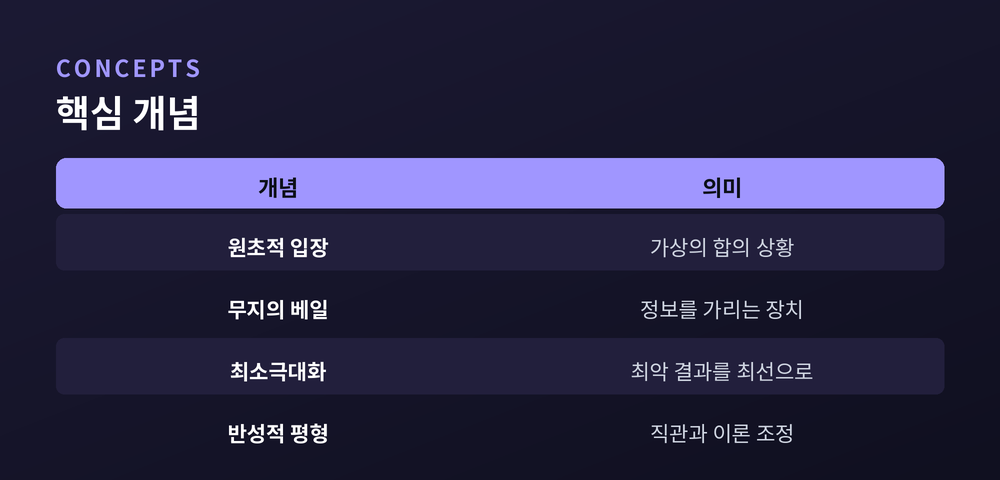

무지의 베일과 공정으로서의 정의

오늘은 존 롤스의 『정의론』을 이야기해 보려 합니다.
'정의란 무엇인가'라는 오래된 질문에, 롤스는 원초적 입장과 무지의 베일이라는 사고 실험으로 답합니다.
이 글에서는 그 핵심 개념과 정의의 두 원칙, 그리고 뒤따른 비판을 함께 정리해 보겠습니다.
롤스는 사회 계약론을 새로운 방식으로 다시 씁니다.
그가 제시한 가상의 출발점이 바로 원초적 입장입니다.
이 상태에서 사람들은 사회의 기본 원칙에 합의할 당사자로 모입니다.
핵심 장치는 무지의 베일입니다.
당사자들은 자신의 계급, 재산, 재능, 성별, 인종을 모릅니다.
자신이 어떤 가치관을 가졌는지도 모릅니다.
다만 사회에 관한 일반 지식과 합리적 판단력만은 갖추고 있습니다.
이런 무지 상태에서 원칙을 고르면 결과는 달라집니다.
자신에게만 유리한 규칙을 주장할 근거가 사라지기 때문입니다.
누구도 자기가 부자가 될지 빈자가 될지 모르는 채 규칙을 정합니다.
그래서 그 합의는 공정하다고 롤스는 주장합니다.
이것이 '공정으로서의 정의'라는 이름의 뜻입니다.
당사자들의 성격도 정해져 있습니다.
합리적으로 자기 이익을 계산하되, 서로 시기하거나 특별히 배려하지도 않습니다.
사회 일반에 관한 지식, 이를테면 경제와 인간 심리의 기본 원리는 알고 있습니다.
다만 자신의 처지에 관한 구체적 정보만 가려져 있을 뿐입니다.
롤스는 원초적 입장이 실제로 열린 회의가 아니라고 못박습니다.
정의 원칙을 정당화하기 위해 고안한 사고 장치라는 뜻입니다.
그래서 이 장치는 '누가 실제로 이렇게 합의했는가'가 아니라, '이런 조건이라면 무엇을 택하는 것이 합리적인가'를 묻습니다.

원초적 입장의 당사자들은 결국 두 가지 원칙에 합의한다고 롤스는 말합니다.
첫째는 평등한 자유의 원칙입니다.
모든 사람은 동등한 기본적 자유를 최대한 누려야 합니다.
언론의 자유, 양심의 자유, 정치적 자유가 여기 포함됩니다.
단, 그 자유는 타인의 동일한 자유와 양립할 수 있어야 합니다.
둘째는 두 부분으로 나뉩니다.
하나는 공정한 기회균등의 원칙입니다.
사회적 지위나 직책은 형식적 개방을 넘어 실질적으로 공정한 조건에서 열려야 합니다.
다른 하나는 차등의 원칙입니다.
사회·경제적 불평등은 그것이 최소 수혜자에게 최대의 이익이 될 때만 정당화됩니다.
세 원칙 사이에는 우선순위가 있습니다.
자유의 원칙이 기회균등과 차등의 원칙에 앞섭니다.
기회균등의 원칙은 다시 차등의 원칙에 앞섭니다.
자유를 더 많은 부와 맞바꾸는 거래는 허용되지 않는 셈입니다.
이 원칙들이 적용되는 대상도 분명히 정해져 있습니다.
롤스는 개인의 낱낱의 행위가 아니라 사회의 기본구조를 정의의 일차 대상으로 봅니다.
헌법, 재산 제도, 시장, 가족 같은 큰 틀의 제도들이 여기 해당합니다.
이런 제도가 어떻게 짜이느냐에 따라 개인의 삶의 기회가 크게 갈립니다.
그래서 롤스는 개별 거래의 공정성보다, 제도 전체의 설계를 먼저 묻습니다.
"정의는 사상 체계의 제일 덕목이 진리이듯, 사회 제도의 제일 덕목이다." — 존 롤스, 『정의론』

왜 하필 이 두 원칙일까요.
롤스는 원초적 입장의 당사자들이 최소극대화 전략을 따른다고 설명합니다.
최소극대화란 선택 가능한 대안들 가운데 최악의 결과가 가장 나은 것을 고르는 방식입니다.
무지의 베일 아래서는 자신이 사회의 어느 자리에 놓일지 알 수 없습니다.
최악의 처지에 놓일 가능성도 배제할 수 없습니다.
그렇다면 합리적인 사람은 최악의 경우를 대비하려 할 것입니다.
평균적 효용을 높이는 도박보다, 바닥을 지탱하는 규칙을 택한다는 뜻입니다.
이 지점에서 롤스는 공리주의와 갈라섭니다.
공리주의는 사회 전체의 효용 총합이나 평균을 극대화하려 합니다.
그 계산 안에서는 소수의 큰 희생이 다수의 이익으로 정당화될 수 있습니다.
롤스는 이를 받아들이지 않습니다.
개인은 서로 대체될 수 없는 별개의 존재라는 것이 그의 전제입니다.
롤스는 이 원칙들을 한 번에 확정하지 않습니다.
사고 실험의 결과와 우리가 이미 가진 도덕적 직관을 오가며 다듬습니다.
이 과정을 그는 반성적 평형이라 불렀습니다.
이론과 직관이 서로 어긋나면, 어느 한쪽을 조정해 균형을 찾는 방법입니다.
최소극대화 전략 자체도 논쟁의 대상이었습니다.
경제학자 존 하사니는 불확실성 아래서는 기대효용을 계산하는 편이 더 합리적이라고 반박했습니다.
확률을 알 수 없다고 해서 최악만 피하려는 태도는 지나치게 조심스럽다는 것입니다.
이에 대해 롤스는 기본적 자유와 생계가 걸린 선택이라는 점을 근거로 듭니다.
평범한 도박과 달리, 되돌릴 수 없는 인생 전체를 거는 선택이라는 것입니다.
그런 상황에서는 기대치 계산보다 최악을 막는 편이 합리적이라고 봅니다.

롤스의 정의론은 발표 직후부터 활발한 반론을 낳았습니다.
가장 널리 알려진 것이 로버트 노직의 비판입니다.
노직은 『아나키에서 유토피아로』에서 다른 그림을 그립니다.
그는 정의를 최종 분배 상태가 아니라 취득의 역사로 이해합니다.
정당하게 얻고 정당하게 이전된 재산은 그 자체로 정당하다는 것입니다.
차등의 원칙처럼 특정 분배 형태를 계속 유지하려는 시도는 문제가 됩니다.
개인의 자유로운 거래를 지속적으로 침해해야만 그 형태를 지킬 수 있기 때문입니다.
노직은 이를 유명한 사례로 설명합니다.
처음에는 모두가 평등하게 나눠 가진 사회를 가정합니다.
사람들이 자발적으로 대가를 내고 어떤 이의 공연을 관람한다면, 그 사람은 곧 더 많은 몫을 가지게 됩니다.
자유로운 선택이 쌓인 결과일 뿐인데, 이 상태를 다시 원래 분배로 되돌리려면 거래 자체를 막아야 합니다.
노직은 여기서 자유와 특정 분배 상태의 유지가 충돌한다고 봅니다.
그래서 그는 최소한의 치안·계약 집행 기능만 갖춘 최소 국가만이 정당하다고 주장했습니다.
공리주의 진영의 비판도 있습니다.
차등의 원칙이 최소 수혜자만 지나치게 배려해 전체 효용을 낮출 수 있다는 지적입니다.
공동체주의자들의 비판도 겹칩니다.
마이클 샌델은 무지의 베일 뒤 개인이 지나치게 추상적이라 봅니다.
실제 인간은 공동체와 관계 속에서 정체성을 형성한다는 반론입니다.
아무 역사도, 아무 소속도 없는 개인을 상정하는 것 자체가 비현실적이라는 지적이기도 합니다.
이에 대한 롤스의 답도 살펴볼 만합니다.
그는 타고난 재능과 태어난 환경을 '자연적·사회적 우연'으로 봅니다.
누구도 스스로 선택하지 않은 조건이므로, 그 우연의 결과를 온전히 개인의 몫으로만 돌리기는 어렵다는 것입니다.
노직은 반대로, 타고난 재능이라도 그것을 발휘해 얻은 결과는 정당한 소유라고 봅니다.
두 입장의 차이는 결국 자유를 어떻게 이해하느냐로 좁혀집니다.
롤스도 이런 논쟁에 완전히 침묵하지는 않았습니다.
후기 저작 『정치적 자유주의』에서는 다원적 가치관 사이의 중첩적 합의를 다시 다룹니다.
서로 다른 종교와 세계관을 가진 시민들도, 정치적 정의의 원칙에서는 합의에 이를 수 있다는 구상입니다.
정의론이 하나의 완결된 답이라기보다, 계속 시험받는 틀이라는 뜻이기도 합니다.
어느 쪽 비판이 옳은지는 지금도 정치철학의 중심 쟁점으로 남아 있습니다.
정리하면 이렇습니다.
무지의 베일은 실재하는 절차가 아니라 사고 실험입니다.
그러나 어떤 원칙이 공정한지 스스로에게 묻는 습관은, 지금도 유효합니다.
완벽한 합의는 없어도, 그 질문을 놓지 않는 태도가 남습니다.